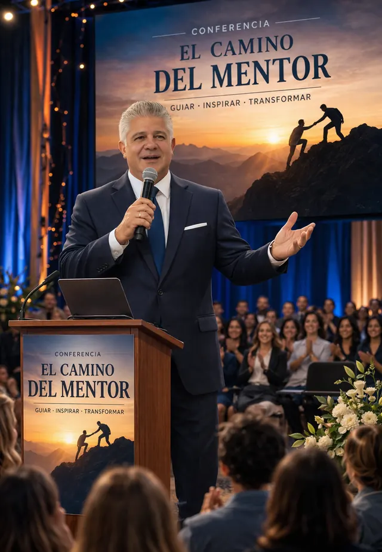

45 a 60 minutos
Conferencia
Una intervención de 45 a 60 minutos que invita a reflexionar sobre el valor de la experiencia vivida, su transformación en conciencia y su potencial para convertirse en sabiduría aplicada. Permite abrir una nueva mirada sobre el legado personal y profesional, comprendiendo cómo cada experiencia puede ser integrada y transferida para generar impacto en otros.